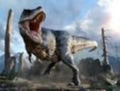
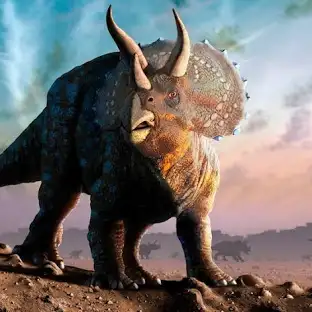

Dinosaurs are a diverse group of reptiles[note 1] of the clade
Dinosauria. They first appeared during the Triassic period, between
243 and 233.23 million years ago (mya), although the exact origin and
timing of the evolution of dinosaurs is a subject of active research.
They became the dominant terrestrial vertebrates after the
Triassic–Jurassic extinction event 201.3 mya and their dominance
continued throughout the Jurassic and Cretaceous periods. The fossil
record shows that birds are feathered dinosaurs, having evolved from
earlier theropods during the Late Jurassic epoch, and are the only
dinosaur lineage known to have survived the Cretaceous–Paleogene
extinction event approximately 66 mya. Dinosaurs can therefore be
divided into avian dinosaurs—birds—and the extinct non-avian
dinosaurs, which are all dinosaurs other than birds.
types of dinosaurs:
stegosaures
Tyrannosaurus-rex

velociraptor
Triceratops

why dinosaurs died?
The exact nature of this catastrophic event is still open to
scientific debate. Evidence suggests an asteroid impact was the main
culprit. Volcanic eruptions that caused large-scale climate change may
also have been involved, together with more gradual changes to Earth's
climate that happened over millions of years.